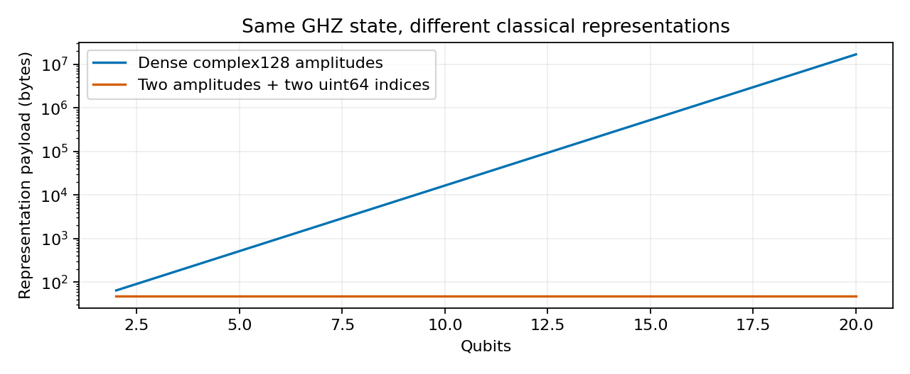

Magnum Quantreleviathone
Michael Emanuel Glover · Developed in dialogue with Codex · October 4, 2026
Smaller representations, quantum fluctuations, and the limits of an ending. A four-page research note with explicit modeling axioms, an induction proof, and nineteen checked classical simulations of quantum circuits.
Read the PDF · Plain text · Reproducible source · Computed results

The compact representation applies to this specific state family. Payload comparisons exclude runtime overhead. Classical simulation does not establish quantum hardware advantage or a cosmic terminating condition.
Reproduce with Python, NumPy, and Matplotlib: run compute.py. PDF rebuilding additionally requires pdfLaTeX; run write.py.
Computation · Manuscript · File manifest